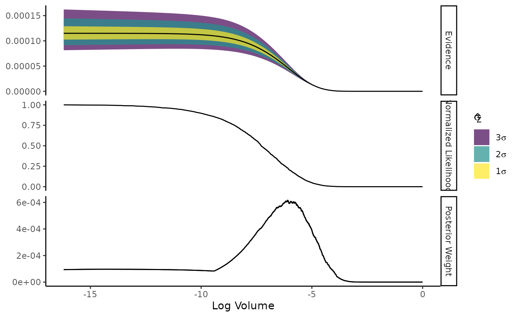
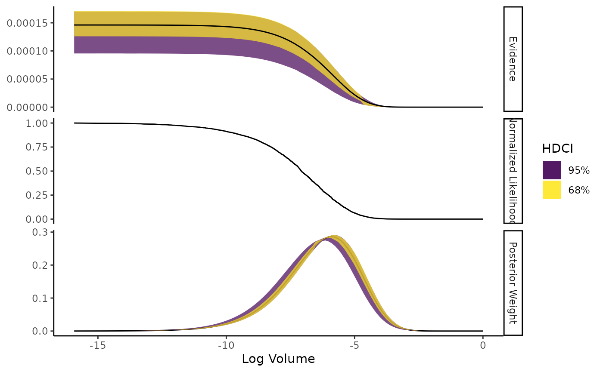
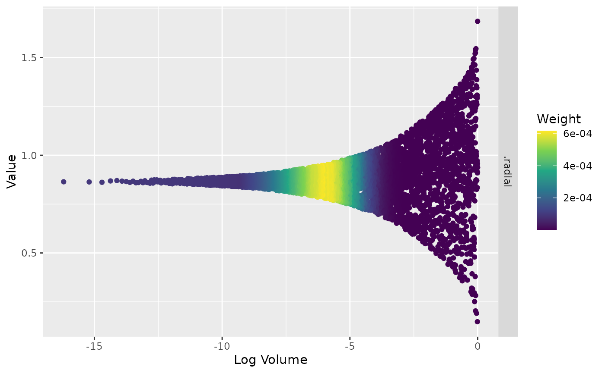

A Nested Sampling Crash Course with Ernest
Source:vignettes/nested-sampling-with-ernest.Rmd
nested-sampling-with-ernest.RmdA Nested Sampling Crash Course using ernest
The goal of this vignette is to teach you the basics of nested sampling by interfacing with the ernest package. After working through this vignette, you should be able to: - Explain how model evidence is relevant to Bayesian inference, and why it is hard to directly calculate; - Recognize how the nested sampling algorithm approximates a solution to the evidence integral; - Identify the components of a nested sampler; - Construct and use prior distributions with ernest’s functions; - Initialize and run a nested sampler with a provided likelihood function, and; - Interpret and visualize nested sampling results to evaluate a model’s evidence and posterior distribution.
Reviewing Model Evidence
Consider a statistical model, called , that has a set of unknown parameters . In Bayesian statistics, we can numerically express how observed data, , will update our knowledge about the distribution of as a probability. This is calculated through Bayes’ theorem: $$ \Pr(\theta|D,M) &= \frac{\Pr(D|\theta, M)\Pr(\theta|M)}{\Pr(D|M)} $$ where is the posterior distribution of the parameters given the data and model assumptions, is the likelihood of the data given the model and its parameters, and is the prior distribution of the parameters. The denominator is the model’s evidence or marginal likelihood.
In isolation, is the normalization constant for , allowing the area under the posterior to integrate to one. However, if we calculate the posterior odds ratios between two models and of the same and simplify, we find that The ratio of evidences is the factor by which the prior odds are updated after observing . This is the Bayes factor, or , and provides a method for us to express our belief in relative to given . Calculating and comparing Bayes factors forms the basis of Bayesian model selection procedures.
We can calculate through integrating the likelihood function over the model’s parameter space Unfortunately, the dimensionality and shape of for most statistical models makes it impossible to evaluate through analytic means. In practice, we instead estimate through a statistical procedure.
The Nested Sampling Algorithm
Nested sampling (NS), developed by John Skilling, is a powerful computational technique for simulatenously estimating a model’s evidence and posterior distribution. NS works by systematically exploring the entire parameter space defined by a prior distribution, dividing the space into a series of small volumes or shells. Each shell is drawn such that they contain regions of the parameter space that all satisfy some likelihood criteria, called . The volume of the shell defined by is where .
If we divide into enough shells with small volumes, we can make the assumption that is constant within each shell; formally, we claim that exists for each value of , such that . If we have some estimate of for each volume, we can simplify the original multidimensional integral over into a unidimensional integral over : This can be easily solved using numerical methods.
Nested sampling enacts this transformation in a series of steps:
- Let be a large number. Draw samples from and sort them based on their likelihood values. These are the live points.
- Remove the point with the worst likelihood value from the live points, denoted . Place this point in the set of dead points.
- Shrink the prior volume. Assuming that each point represents of the prior volume, we estimate that removing changes the volume occupied by the live points by .
- Add a new live point, using likelihood restricted prior sampling. Each sample is assumed to be independently and identically distributed, and are restricted such that the new point must have likelihood greater than . This ensures that the volume of the live points will continue to shrink between iterations.
- Perform steps 1 through 4 many times.
- Update the evidence estimate using some numerical integration technique. Ernest uses the trapezoidal rule, such that for each iteration out of . The unormalized posterior weights = (V_{i - 1} - V_i) (L(V_i) + L(V_{i_1}))/2$ are also used to later estimate the posterior sample.
- Terminate the run. After iterations, the remaining volume to contribute to will become exponentially small, concentrating the live points over a small range of likelihood values. At this point, the contributions of each point to the evidence estimate are considered negligible, and the run can be stopped.
The final estimate are available immediately after terminating the run. The dead and live points can also be resampled using their normalized posterior weights , generating a posterior sample.
Priors in Nested Sampling
To perform nested sampling, ernest requires a likelihood function and
a specification of the prior space. The prior space is defined through
an ernest_prior object, which can be defined using either
the more general create_prior() or one of ernest’s
specialized prior functions.
Nested sampling operates by drawing samples from the prior distribution. For computational efficiency, ernest draws points from the unit hypercube: a -dimensional space where each coordinate lies in . The transformation from the unit hypercube to the actual parameter space is called the “hypercube transformation.” This approach allows the sampler to avoid inefficient rejection sampling and ensures that all points remain valid under the prior.
The hypercube transformation is typically constructed by applying the inverse cumulative distribution function (CDF) of each marginal prior to the corresponding coordinate in the unit cube. For independent priors, this is straightforward: each parameter’s prior is mapped independently. For more complex or hierarchical priors, users can provide a custom transformation function that encodes dependencies or non-standard mappings.
In the most simple of cases, priors can be specified through using
one of several specialized prior constructors for common distributions,
such as create_uniform_prior(),
create_normal_prior(), and others. These functions
automatically set up the appropriate hypercube transformation for the
chosen distribution.
# Three Dimensional Uniform
prior <- create_uniform_prior(
3,
lower = -10,
upper = 10,
varnames = c("X", "Y", "Z")
)
prior
#> <ernest_prior/uniform_prior>
#> X, Y, and ZShould you require a more complicated prior, you can create your own
hypercube transformation function and submit it to
create_prior(). This function should accept a vector of
unit cube coordinates and return the corresponding vector of parameter
values. ernest will validate your function to ensure it produces finite,
correctly-shaped outputs within the specified bounds.
For example, to specify a the same 3-dimensional prior, you can perform the following:
transformation <- function(x) {
x * 20 - 10
}
create_prior(
fn = transformation,
n_dim = 3,
lower = -10,
upper = 10
)
#> <ernest_prior>
#> X, X.1, and X.2If your prior involves dependencies between parameters, you can encode these in your transformation function. For example, a hierarchical prior might look like:
hierarchical <- function(theta) {
mu <- qnorm(theta[1], mean = 5, sd = 1)
sigma <- 10 ^ qunif(theta[2], min = -1, max = 1)
x <- qnorm(theta[3], mean = mu, sd = sigma)
c(mu, sigma, x)
}
create_prior(
fn = hierarchical,
n_dim = 3,
varnames = c("mu", "sigma", "x"),
lower = c(-Inf, 0, -Inf)
)
#> <ernest_prior>
#> mu, sigma, and xBy specifying the prior in this way, you ensure that nested sampling explores the correct region of parameter space, respecting any constraints or dependencies your model requires.
Running Nested Sampling in Ernest
In addition to the prior specification, you also need to provide
ernest with a log likelihood function. This function should accept a
numeric vector of parameter values (as produced by the prior’s
transformation) and return a single numeric value representing the
parameter’s corresponding log likelihood. If there are areas of the
prior space where the likelihood should not exist, the function should
instead return -Inf. create_likelihood() wraps
this function, ensuring that missing and nonfinite (e.g,
Inf, NaN) values are handled gracefully during
a nested sampling run. This ensures compatibility with ernest’s sampling
routines and robust evidence estimation.
Defining likelihood functions for every possible model is outside the scope of this vignette. For the sake of exploration, we will consider the following likelihood of a 3D correlated Gaussian distribution.
n_dim <- 3
sigma <- diag(0.95, nrow = 3) # Covariance matrix
det_sigma <- log(det(sigma))
prec <- solve(sigma) # Precision matrix (Sigma^-1)
log_norm <- -0.5 * (log(2 * pi) * n_dim + det_sigma) # Normalization for MVG
# Log-likelihood of MVG(0, Sigma)
log_lik <- function(theta) {
drop(-0.5 * crossprod(theta, crossprod(prec, theta)) + log_norm)
}Once you have specified your prior and likelihood, you are ready to
set up a nested sampling run using the ernest_sampler()
function. This function prepares an ernest_sampler object,
which manages the live points and the sampling process.
The sampler argument in ernest_sampler()
determines how new live points are generated under the likelihood
constraint. At present, ernest provides two built-in samplers:
-
unif_cube(): Uniformly samples points from the unit hypercube, rejecting those that do not meet the likelihood constraint. This is simple but inefficient in high dimensions. -
rwmh_cube(steps = 25L, target_acceptance = 0.5): Uses a random walk Metropolis-Hastings algorithm to propose new points, which is more efficient for moderate to high dimensions.
For most practical problems, rwmh_cube() is recommended
and set as the default choice. You can adjust its steps and
target_acceptance parameters to further tune its
behavior.
# Set up a sampler using rwmh_cube
sampler <- ernest_sampler(
log_lik = log_lik,
prior = prior,
n_points = 500
)
sampler
#> Nested sampling specification <ernest_sampler>
#> No. Points: 500
#>
#> ── Sampling Method
#> • Random Walk in Unit Cube LRPS <rwmh_cube/ernest_lrps>
#> • No. Dimensions: 3
#> • No. Calls Since Update: 0
#> • No. Accepted Since Update: 0
#> • Current Step Size: 1After initializing the sampler, you can start the nested sampling run
using generate(). This first calls compile(),
which constructs and validates the live points within a nested sampler,
with additional checks that both the likelihood and prior are
well-specified. Once compilation is complete, generate()
enters the nested sampling loop, which iteratively explores the
parameter space, updating live points and accumulating evidence
estimates. This loop terminates once one of the following termination
criteria are met:
- The maximum number of iterations (
max_iterations) is reached. - The maximum number of likelihood function calls
(
max_calls) is reached. - The estimated remaining contribution of the live points to the
evidence estimate falls below a specified threshold
(
min_logz).
For example, you can perform 1000 iterations of nested sampling using
sampler.
run_1k <- generate(sampler, max_iterations = 1000, seed = 42L)
#> Creating new live points.
run_1k
#> Nested sampling run <ernest_run/ernest_sampler>
#> No. Points: 500
#>
#> ── Sampling Method
#> • Random Walk in Unit Cube LRPS <rwmh_cube/ernest_lrps>
#> • No. Dimensions: 3
#> • No. Calls Since Update: 0
#> • No. Accepted Since Update: 0
#> • Current Step Size: 0.258655539829289
#>
#> ── Results
#> No. Iterations: 1000
#> No. Calls: 10403
#> Log. Evidence: -8.79580191281948 (± 1.14614906320369)You can build more accurate estimates of evidence by continuing this
run until min_logz falls below 0.05. This allows
sampler to resume sampling while retaining the previously
collected dead points.
run_dlogz <- generate(run_1k)
#> `min_logz` reached (0.0499224515859421 < 0.05)
run_dlogz
#> Nested sampling run <ernest_run/ernest_sampler>
#> No. Points: 500
#>
#> ── Sampling Method
#> • Random Walk in Unit Cube LRPS <rwmh_cube/ernest_lrps>
#> • No. Dimensions: 3
#> • No. Calls Since Update: 0
#> • No. Accepted Since Update: 0
#> • Current Step Size: 0.0210159602444766
#>
#> ── Results
#> No. Iterations: 4705
#> No. Calls: 103028
#> Log. Evidence: -9.07085965800828 (± 0.114847902516216)Reviewing Nested Sampling Runs
Calls to generate() return an ernest_run
object, which has methods for several generics to help you inspect and
analyze the results from nested sampling. Unlike non-native NS
implementations, ernest is designed to integrate neatly with popular R
packages like ggplot2 and posterior.
To show how the evidence estimates change over the course of the run,
you can use the plot() function to construct a facetted
ggplot.
plot(run_dlogz)
To capture how uncertainty impacts the evidence estimates,
calculate() allows you to simulate a nested sampling run
under a series of randomly drawn log volume estimates. This function
calls the posterior package to efficently store the
simulations and their related quantities.
# Simulate uncertainty with 1000 draws
library(posterior)
#> This is posterior version 1.6.1
#>
#> Attaching package: 'posterior'
#> The following objects are masked from 'package:stats':
#>
#> mad, sd, var
#> The following objects are masked from 'package:base':
#>
#> %in%, match
calc_sim <- calculate(run_dlogz, ndraws = 1000)
calc_sim
#> Nested sampling estimates <ernest_estimate>
#> No. of Simulated Draws: 1000
#> Log. Volume: -16 ± 1.3
#> Log. Evidence: -8.9 ± 0.19
#> # A tibble: 5,205 × 4
#> log_lik log_volume log_weight log_evidence
#> <rvar[1d]> <rvar[1d]> <rvar[1d]> <rvar[1d]>
#> 1 -146 ± NA -0.0019 ± 0.0020 -154 ± 1.3 -154 ± 1.26
#> 2 -144 ± NA -0.0039 ± 0.0029 -151 ± 1.2 -151 ± 0.97
#> 3 -139 ± NA -0.0057 ± 0.0035 -146 ± 1.3 -146 ± 1.19
#> 4 -136 ± NA -0.0078 ± 0.0040 -143 ± 1.4 -143 ± 1.11
#> 5 -129 ± NA -0.0097 ± 0.0046 -136 ± 1.3 -136 ± 1.25
#> 6 -126 ± NA -0.0116 ± 0.0050 -134 ± 1.3 -134 ± 1.02
#> 7 -125 ± NA -0.0136 ± 0.0055 -132 ± 1.2 -132 ± 0.88
#> 8 -125 ± NA -0.0155 ± 0.0058 -132 ± 1.3 -131 ± 0.73
#> 9 -118 ± NA -0.0175 ± 0.0062 -126 ± 1.4 -126 ± 1.28
#> 10 -118 ± NA -0.0194 ± 0.0065 -125 ± 1.2 -124 ± 0.82
#> # ℹ 5,195 more rows
plot(calc_sim)
Finally, the visualize() function provides plots of the
parameter values themselves.
# Density plot of posterior marginals
visualize(run_dlogz, type = "density")
# Trace plot of the radial coordinate in unit-cube space
visualize(run_dlogz, type = "trace", vars = ".radial", units = "unit_cube", radial = TRUE)
These tools allow you to thoroughly review and interpret the results of your nested sampling analysis.
Additional Reading
- Buchner, J. (2023). Nested Sampling Methods. Statistics Surveys, 17, 169–215. https://doi.org/10.1214/23-SS144
- Skilling, J. (2004). Nested Sampling. AIP Conference Proceedings, 735(1), 395–405. https://doi.org/10.1063/1.1835238
- Skilling, J. (2006). Nested Sampling for General Bayesian Computation. Bayesian Analysis, 1(4), 833–859. https://doi.org/10.1214/06-BA127
- Speagle, J. (2020). DYNESTY: A Dynamic Nested Sampling Package for Estimating Bayesian Posteriors and Evidences. Monthly Notices of the Royal Astronomical Society, 493(3), 3132–3158. https://doi.org/10.1093/mnras/staa278.